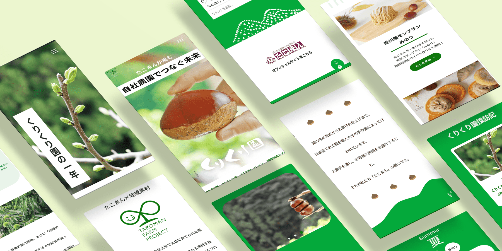

Works
くりくり園 Web サイト

地域に根ざした和洋菓子店 株式会社たこまん様の「Takoman FarmProject」の一環として取り組まれている、自社農園「くりくり園」を紹介するコーポレートサイトを制作しました。
「Takoman Farm Project」とは、“地元静岡で大切に育てられた素材をお菓子に変えてお客様にお届けし、次の世代へと繋いでいく”というコンセプトのもと、地域とともに歩むプロジェクトです。
くりくり園はその象徴とも言える存在であり、既存サイト内に点在していた情報を一つにまとめ、自社農園という強みを明確に打ち出すために制作しました。
サイトでは、収穫時期だけでなく年間を通して行われている活動や、地域の農作物の魅力、収穫した栗を使ったお菓子などを丁寧に紹介し、“地域とともにある企業”としての姿を伝えることを目指しました。

- クライアント
- 株式会社 たこ満 様
- ターゲット
- 地域のお客様・取引先・メディア関係者
- 目的
- 点在していた情報を一つに集約し、活動の魅力と商品の価値を伝える。
- 製作範囲
- 構成設計・デザイン・コーディング（HTML／CSS／WordPress化）
- 使用ツール
- Figma／Photoshop／VSCode／WordPress
- 製作期間
- 企画・情報設計・WF 1週間
- デザイン 1週間
- コーディング 2週間
- WordPress 1週間
- サイトURL
- https://xs668066.xsrv.jp/kurikurien/
※本サイトは、在籍時に自主制作したものであり、掲載については社内許可をいただいております。